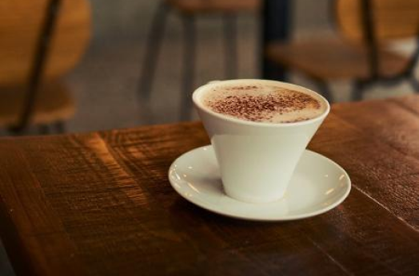
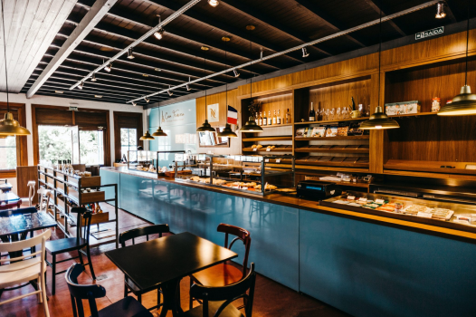

No Java Beans, cada xícara conta uma história. Somos apaixonados por bons cafés, boas ideias e bons encontros. De grãos selecionados a receitas autorais, tudo aqui é feito para despertar sentidos e criar conexões. Entre, sente-se e descubra seu novo lugar favorito.
Nosso café
Trabalhamos com torrefações artesanais e métodos de preparo variados, do espresso clássico ao coado delicado, para valorizar todas as nuances do café. Seja qual for sua preferência, temos um ritual preparado com carinho e técnica, do grão à xícara.
Nosso ambiente
Cada detalhe do espaço foi pensado para proporcionar conforto, acolhimento e inspiração. Entre o aroma fresco do café moído na hora e uma trilha sonora suave, criamos um ambiente que equilibra tranquilidade e criatividade — perfeito para uma pausa revigorante, uma boa conversa ou até mesmo horas de foco e produtividade.